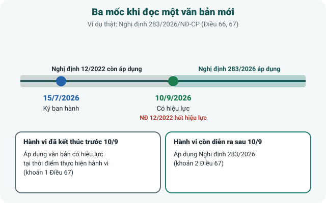

K10 · Năng lực số, AI và quy tắc nơi làm việc › Bậc 4 Thành thạo
Đọc một văn bản quy định mới và biến nó thành việc cần làm
Bài này làm Tờ 7: Phiếu theo dõi quy định. Mẫu in. Bài dạy cách đọc và áp dụng văn bản, không phải tư vấn pháp lý. Việc quan trọng, hãy hỏi bộ phận pháp chế hoặc luật sư. Tiêu chuẩn trách nhiệm xã hội của khách hàng sẽ có ở trachnhiemxahoi.com (sắp ra mắt).
1. Mục tiêu
- Điền phiếu theo dõi một văn bản: số hiệu, cơ quan, ngày ban hành, ngày hiệu lực, văn bản bị thay thế, chuyển tiếp.
- Chuyển một điều khoản thành việc cần làm có người phụ trách, hạn và bằng chứng.
2. Khởi động truy xuất
- Một trang dự án có 6 ô nào?
- Khi mốc có nguy cơ trễ, bạn đưa người quyết ba lựa chọn nào?
Đáp án
- Mục tiêu; phạm vi; mốc; vai trò; phụ thuộc; rủi ro.
- Lùi hạn; bớt phạm vi; thêm nguồn lực.
Xem lại: Quản lý dự án gọn nhẹ.
3. Giải thích
Ở nhiều vị trí senior, bạn là người đầu tiên đọc một quy định mới. Đó có thể là luật, nghị định, quy định nội bộ hay tiêu chuẩn của khách. Cách đọc giống nhau.
Bước 1. Đọc phần đầu và phần cuối trước. Phần đầu có số hiệu, cơ quan ban hành, ngày ký. Phần cuối có điều "Hiệu lực thi hành" và "Điều khoản chuyển tiếp".
Bước 2. Phân biệt ba mốc thời gian. Ngày ký khác ngày có hiệu lực. Văn bản chỉ áp dụng từ ngày có hiệu lực. Dự thảo chưa được thông qua thì chưa áp dụng.
Bước 3. Tìm văn bản bị thay thế. Văn bản mới thường ghi rõ văn bản cũ hết hiệu lực từ ngày nào. Hãy cập nhật mọi tài liệu nội bộ đang dẫn văn bản cũ.
Bước 4. Đọc chuyển tiếp. Sự việc xảy ra trước ngày hiệu lực thường vẫn theo văn bản cũ. Đây là chỗ hay hiểu sai.
Bước 5. Biến điều khoản thành việc. Mỗi điều liên quan thành một dòng: phải làm gì, ai làm, hạn nào, bằng chứng gì.

Văn bản hợp nhất (VBHN). Khi một luật được sửa nhiều lần, cơ quan nhà nước ghép các lần sửa thành một văn bản hợp nhất. Bản này dễ đọc. Khi trích dẫn, hãy ghi cả số VBHN và luật gốc.
Văn bản nào thắng? Khi hai văn bản khác nhau, áp dụng văn bản có hiệu lực pháp lý cao hơn. Nếu cùng một cơ quan ban hành, áp dụng văn bản ban hành sau.
Tờ 7. Phiếu theo dõi quy định
- Nhận diệnSố hiệu, cơ quan, ngày ký, nguồn chính thức.
- Hiệu lựcNgày áp dụng, văn bản bị thay thế.
- Chuyển tiếpViệc cũ theo văn bản nào.
- Điều liên quanChỉ chọn điều chạm tới việc của nhóm.
- Bảng việcViệc · Ai · Hạn · Bằng chứng.
Đừng dựa vào bản tóm tắt trên mạng hay câu trả lời của AI. Luôn mở văn bản gốc từ nguồn chính thức và ghi ngày tra.
4. Ví dụ tại nơi làm việc Việt Nam
Tình huống giả định. Chị Thu là chuyên viên nhân sự cấp cao ở một xưởng may tại Đồng Nai. Tháng 8/2026, chị được giao cập nhật bảng kiểm tuân thủ lao động của xưởng.
Bảng kiểm cũ ghi căn cứ xử phạt là Nghị định 12/2022/NĐ-CP. Chị nghe nói có nghị định mới.
Chị mở văn bản gốc. Phần đầu: Nghị định 283/2026/NĐ-CP, Chính phủ ban hành ngày 15/7/2026. Phần cuối, Điều 66: có hiệu lực từ 10/9/2026. Nghị định 12/2022/NĐ-CP hết hiệu lực cùng ngày.
Chị đọc Điều 67 về chuyển tiếp. Hành vi đã kết thúc trước 10/9/2026 thì xử lý theo văn bản có hiệu lực lúc đó. Hành vi vẫn đang diễn ra sau ngày này thì áp dụng nghị định mới.
Chị ghi Tờ 7 rồi lập bảng việc:
| Việc | Ai | Hạn | Bằng chứng |
|---|---|---|---|
| Đổi căn cứ trong bảng kiểm sang Nghị định 283 | Chị Thu | 05/9 | Bảng kiểm bản mới |
| Rà các vi phạm còn đang diễn ra, sửa trước 10/9 | Tổ trưởng các bộ phận | 08/9 | Biên bản rà soát |
| Gửi pháp chế công ty xem lại | Chị Thu | 01/9 | Email phản hồi |
Chị không tự diễn giải mức phạt. Phần đó chị nhờ pháp chế xác nhận.
Vì sao cách này tốt: chị đọc văn bản gốc, không đọc tin đồn. Chị tách rõ ngày ký và ngày hiệu lực. Bảng việc có người, hạn và bằng chứng. Phần cần chuyên môn pháp lý được chuyển đúng người.
5. Thực hành
Tình huống giả định. Bạn là kế toán tiền lương cấp cao ở một công ty bán lẻ có cửa hàng ở nhiều tỉnh. Cuối năm 2025, bạn được giao cập nhật quy định lương tối thiểu. Văn bản mới là Nghị định 293/2025/NĐ-CP.
Tìm văn bản gốc từ nguồn chính thức. Điền 4 ô đầu của Tờ 7. Viết 2 dòng bảng việc.
Gợi ý 1
Mở điều cuối cùng của nghị định. Điều đó ghi ngày hiệu lực và văn bản cũ hết hiệu lực.
Gợi ý 2
Công ty có cửa hàng ở nhiều tỉnh. Đọc điều về cách xác định vùng áp dụng cho từng chi nhánh.
Lời giải mẫu
- Nhận diện: Nghị định 293/2025/NĐ-CP, Chính phủ ban hành ngày 10/11/2025.
- Hiệu lực: từ 01/01/2026 (khoản 1 Điều 5). Nghị định 74/2024/NĐ-CP hết hiệu lực cùng ngày (khoản 2 Điều 5).
- Điều liên quan: Điều 3 (mức lương tối thiểu theo vùng, cách xác định vùng) và Điều 4 (áp dụng mức lương tối thiểu).
- Bảng việc 1: đối chiếu địa bàn từng cửa hàng với Phụ lục danh mục vùng. Ai: bạn. Hạn: 15/12/2025. Bằng chứng: bảng cửa hàng và vùng.
- Bảng việc 2: rà các mức lương đang thấp hơn mức mới, đề xuất điều chỉnh. Ai: bạn và trưởng nhân sự. Hạn: 20/12/2025. Bằng chứng: danh sách đã duyệt.
Mức tiền cụ thể: tra Điều 3 trong văn bản gốc. Bài không chép lại để tránh sai sót.
6. Tự kiểm tra
Chọn đáp án. Mỗi lựa chọn đều có giải thích.
Câu 1. Một nghị định được ký ngày 15/7 và có hiệu lực từ 10/9. Ngày 20/8, quy định nào đang áp dụng?
-
Chưa đúng. Ngày ký không phải ngày áp dụng. Văn bản chỉ áp dụng từ ngày có hiệu lực.
-
Đúng. Đúng. Trước ngày hiệu lực, văn bản cũ vẫn được áp dụng.
-
Chưa đúng. Không có khoảng trống. Văn bản cũ chỉ hết hiệu lực khi văn bản mới có hiệu lực.
Câu 2. Bạn đọc tin: "Quốc hội đang thảo luận thêm một ngày nghỉ có hưởng lương." Bạn nên làm gì với lịch nghỉ của công ty?
-
Chưa đúng. Dự thảo chưa thông qua thì chưa áp dụng, và nội dung còn có thể đổi.
-
Đúng. Đúng. Theo dõi sớm giúp chuẩn bị, nhưng chỉ áp dụng khi văn bản có hiệu lực.
-
Chưa đúng. Bỏ qua thì dễ bị bất ngờ. Nên theo dõi để kịp chuẩn bị.
Câu 3. Quy định nội bộ của công ty và một nghị định nói khác nhau về cùng một việc. Bạn xử lý thế nào?
-
Chưa đúng. Quy định nội bộ không được trái pháp luật. Cần đối chiếu và sửa.
-
Đúng. Đúng. Báo và sửa tài liệu nội bộ để lần sau không ai làm sai.
-
Chưa đúng. Việc tuân thủ không dựa vào lợi ích của bộ phận.
Câu 4. Đồng nghiệp gửi bản tóm tắt một nghị định do AI viết. Bước tiếp theo đúng là gì?
-
Chưa đúng. Bản tóm tắt có thể sai số hiệu, ngày hoặc nội dung. Không dùng làm căn cứ.
-
Đúng. Đúng. Chỉ văn bản gốc mới là căn cứ. Bản tóm tắt chỉ giúp định hướng.
-
Chưa đúng. Lan truyền một bản chưa kiểm có thể làm cả phòng làm sai.
Câu 5. Một vi phạm xảy ra và đã kết thúc trước ngày nghị định mới có hiệu lực. Theo Điều 67 Nghị định 283/2026/NĐ-CP, áp dụng văn bản nào?
-
Chưa đúng. Ngày phát hiện không quyết định. Điều 67 dựa vào thời điểm thực hiện hành vi.
-
Đúng. Đúng. Đây là quy định chuyển tiếp tại khoản 1 Điều 67.
-
Chưa đúng. Điều 67 không quy định như vậy. Đọc đúng điều khoản chuyển tiếp của văn bản.
7. Phản tư
- Tài liệu nội bộ nào ở chỗ bạn đang dẫn văn bản có thể đã hết hiệu lực?
- Bạn thường đọc quy định mới từ đâu: văn bản gốc, tin tức, hay người khác kể lại?
8. Áp dụng thật
Trong 7 ngày tới, chọn một quy định chạm tới công việc của bạn. Mở văn bản gốc. Làm Tờ 7, ghi ngày tra. Nhờ một người hiểu luật hoặc pháp chế xem lại.
Cập nhật lần cuối: 14/11/2026. Nguồn đã đối chiếu với văn bản gốc: Nghị định 283/2026/NĐ-CP ngày 15/7/2026 (Điều 66, 67), có hiệu lực từ 10/9/2026. Nghị định 293/2025/NĐ-CP ngày 10/11/2025 (Điều 3, 4, 5), có hiệu lực từ 01/01/2026. Luật Ban hành văn bản quy phạm pháp luật số 64/2025/QH15, sửa đổi bởi Luật số 87/2025/QH15. Bản dùng: văn bản hợp nhất 54/VBHN-VPQH ngày 11/8/2025 (Điều 4, 53, 57, 58, 65). Bộ luật Lao động sửa đổi đang được Quốc hội xem xét, chưa thông qua tại ngày tra.
9. Siêu dữ liệu
| skill | K10 · Năng lực số, AI và quy tắc nơi làm việc |
|---|---|
| level | Bậc 4 · Thành thạo |
| group | N4 |
| framework_map | WEF: Technological literacy; CSfW: 1b Work with roles, rights and protocols; 3e Work in a digital world; SkillsFuture CCS: Digital Fluency; Sense Making; DigComp 3.0; NACE: Critical Thinking (chỉ dẫn chiếu) |
| updated | 2026-11-14 |
Hoàn thành bài
Đánh dấu đã học để site gợi ý lịch ôn sau 1, 3 và 7 ngày. Dữ liệu chỉ lưu trên máy của bạn.
Lịch ôn gợi ý: